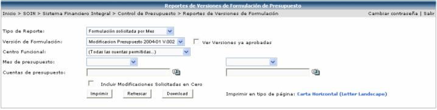
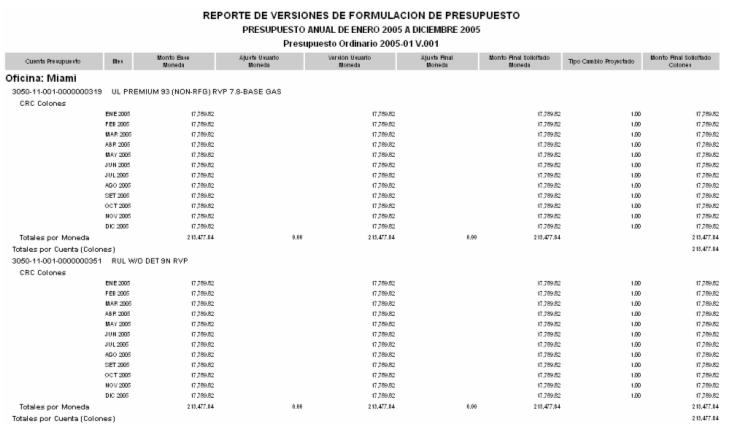

La siguiente pantalla
muestra los filtros a utilizar para generar el reporte de versiones de
formulación. El mismo se puede generar en HTML, presionando el botón  o en Excel presionando el botón
o en Excel presionando el botón  . El sistema
le sugiere al usuario la orientación y tamaño de la hoja, para cuando
desee imprimir el reporte, sepa en que tipo de hoja y en que orientación
debe de imprimirlo.
. El sistema
le sugiere al usuario la orientación y tamaño de la hoja, para cuando
desee imprimir el reporte, sepa en que tipo de hoja y en que orientación
debe de imprimirlo.

La siguiente información es un ejemplo del reporte que se genera, donde se muestra la cuenta presupuestal, el mes, el monto base, el ajuste usuario, la versión usuario, el ajuste final, el monto final solicitado, el tipo de cambio proyectado y el monto final solicitado:
